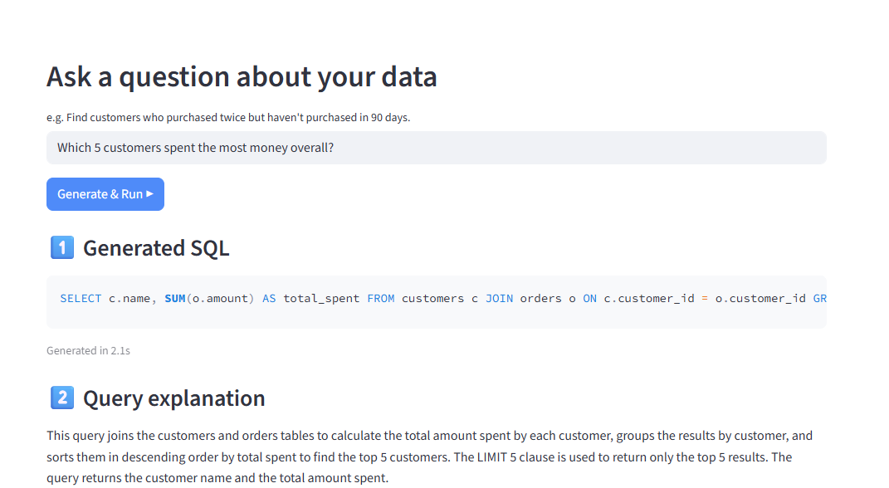
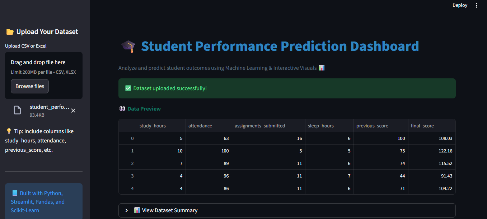
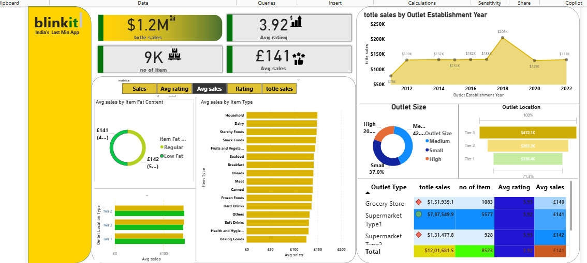

ML
Machine Learning
Scikit-learn · Regression & Classification · Feature Engineering · Model Evaluation · Predictive Modeling · ML Basics
Building data-driven solutions with Machine Learning, analytics, and intelligent applications — while continuously exploring Deep Learning & Generative AI.
I’m Sasikumar P, a passionate Data Scientist, Data Analyst, and AI/ML Developer with a B.Tech in Information Technology.
I enjoy transforming raw data into meaningful insights and building intelligent applications that solve real-world business problems. My strongest foundation is in Machine Learning, Data Analytics, SQL, and Power BI, with hands-on projects spanning predictive modeling, business dashboards, exploratory analysis, and AI-powered applications.
Currently, I’m expanding my expertise in Deep Learning and Generative AI, strengthening my core ML skills while learning modern AI technologies.
Scikit-learn · Regression & Classification · Feature Engineering · Model Evaluation · Predictive Modeling · ML Basics
Python · Pandas · NumPy · Matplotlib · EDA · Data Cleaning · Statistical Analysis · Data Visualization
SQL · MySQL · SQL Server · Power BI · DAX · Power Query · Excel · Tableau · KPI Analysis · Dashboard Design
LLM Prompt Engineering · Streamlit · GenAI Application Development · Natural Language → SQL · AI-powered data explanation
Currently expanding: Deep Learning & Generative AIStreamlit · Plotly · Git/GitHub · Jupyter Notebook · Google Sheets · Dashboard Automation · Report Automation
Joins · Subqueries · CTEs · Window Functions · Stored Procedures · ETL · Root Cause Analysis · Trend & Predictive Analysis

AI-powered Streamlit application that converts natural-language questions into schema-aware SQL, executes queries on SQLite, validates read-only SQL, and generates plain-English business insights.

Interactive machine learning dashboard for student performance analysis and prediction using Python, Streamlit, Pandas, Plotly and Scikit-learn. Includes EDA, correlation analysis, feature selection and regression model evaluation.

Interactive Power BI sales dashboard analyzing performance by outlet type, location, size, and product category using KPI analysis, data modeling, data transformation, DAX and Power Query.
Exploratory data analysis of global technology layoffs, identifying layoff trends, company-wise impact, industry patterns, funding relationships and geographical distribution through statistical analysis and visualization.
Shreenivasa Engineering College, Tamil Nadu
CGPA · 7.5 / 10Salem Mahendra College
PySpiders · 2026
IBM SkillsBuild · 2025
IBM SkillsBuild
Deloitte — Forage · August 2026
2026
Oracle University
I’m open to Data Science, Data Analytics, Machine Learning, and AI/ML opportunities.